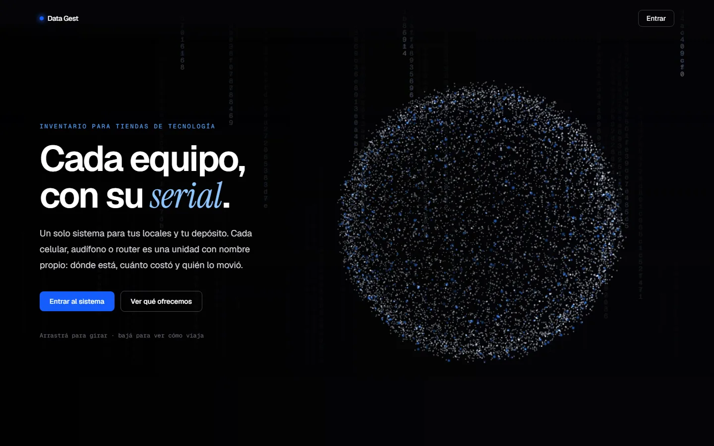
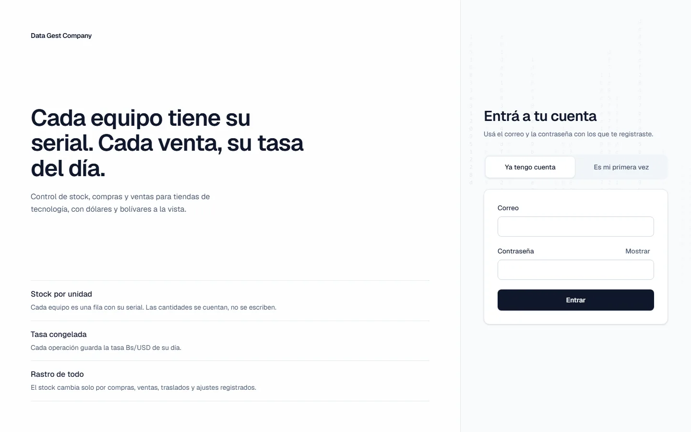
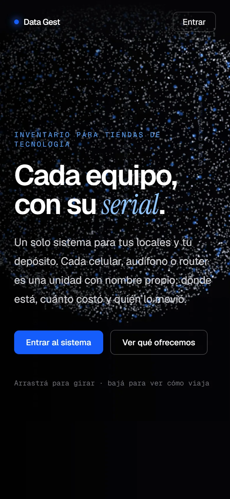

Proyecto 01 — Inventario multilocal
Data Gest
Cada equipo, con su serial.
Sistema de inventario para tiendas de tecnología con depósito y varias sucursales. Cada celular, audífono o router es una unidad con nombre propio: dónde está, cuánto costó y quién lo movió. Pensado para el comercio venezolano, con dólares y bolívares a la vista.
- Stock por unidad y por serial/IMEI: las cantidades se cuentan, no se escriben.
- Traslados entre depósito y locales con rastro de quién y cuándo.
- Caja diaria con pago móvil, puntos de venta, divisas y financieras con cuotas.
- Tasa Bs/USD congelada en cada operación.
- Multi-negocio: cada cliente ve solo sus datos (seguridad a nivel de fila).
- Nota de entrega y lista de precios imprimibles; lector de código de barras.
- Next.js
- React
- Supabase · Postgres
- Tailwind
- Vercel
- Partículas WebGL


